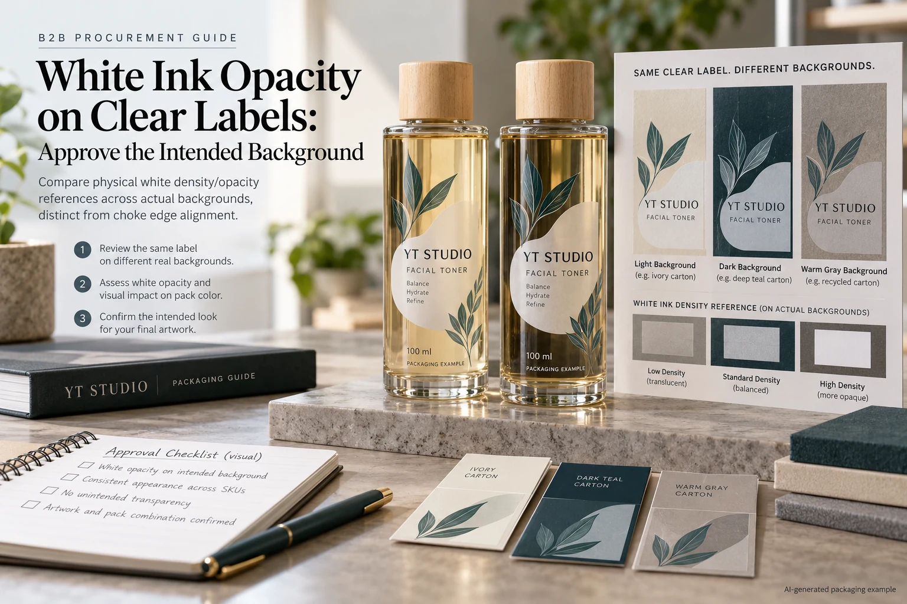
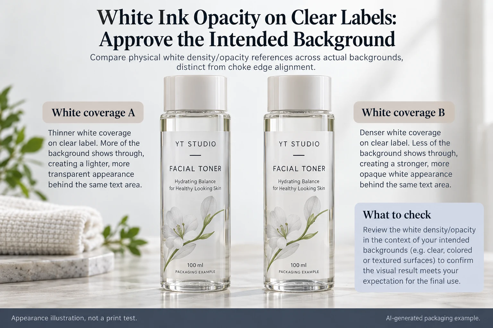

A clear toner label uses white behind the brand name. On the proof, the name looks solid. On the filled bottle, the amber background changes the impression. Someone asks prepress to increase the white percentage. The request needs a physical appearance reference before it becomes a production instruction.
Approve the intended white coverage on the actual background and finished construction. Do not treat a screen-white patch or a file percentage as proof of printed opacity. Separate the location of the white layer from how opaque that layer needs to appear.

Answer where white belongs before judging its density
Mark which artwork areas should be opaque white, color over white, translucent color or unprinted. Keep the mapping connected to the released artwork. Without it, two sample proposals may use different white areas and appear to be an opacity comparison when they are actually different designs.
Our clear-label appearance guide explains that choice. The question here starts after the white areas are identified: what finished appearance is acceptable when the intended bottle and fill show through or around them?
Also distinguish a coverage adjustment from an edge adjustment. The white-ink choke guide addresses the relationship at the printed edge. A neat edge can surround a white layer that still does not provide the intended background. Increasing the area and increasing its opacity are not the same instruction.
Make the comparison background representative
Identify the container, its color and coating, fill reference and intended label position. An empty clear bottle is a different presentation from a filled amber one. A loose label on white paper can conceal the very background effect the buyer is trying to assess.
Where the range has materially different backgrounds, include representative ones in the review and record which were examined. Do not approve the lightest fill and silently extend that approval to every darker variant. If the team accepts different appearances by SKU, document that choice openly.
The packaging illustrations in this guide explain the comparison. They are not press samples, optical measurements or evidence that a particular printing process achieves the displayed white. An actual proposed production reference is needed before approving the requirement.
Ask what the proposed white instruction will produce
Have the converter explain how its supported workflow interprets the white layer and how a proposed sample represents the planned output. A channel percentage, pass description or informal double-white label can be meaningful within a named process, but it is not a universal opacity unit shared by every supplier.
Identify the face film, adhesive appearance, ink arrangement and protective finish alongside the white sample. If the supplier changes the construction between samples, record that difference. Otherwise a surface or background change may be mistaken for a change in white alone.
If numerical assessment is required, let the qualified technical parties agree the method, reference, sample presentation and acceptance rule. This article prescribes no optical threshold, number of passes or ink formulation. The commercial release should refer to evidence the supplier can actually reproduce and acknowledge.
Use a white-appearance release card
| Input | Record | Decision supported |
|---|---|---|
| Artwork map | White-backed, translucent and unprinted objects | Are the same areas being compared? |
| Background | Bottle, fill, position and representative variants | Does the sample show the intended pack? |
| Finished construction | Identified film, adhesive, print arrangement and finish | What supplied combination is proposed? |
| Appearance reference | Physical sample ID and agreed viewing conditions | Which white appearance is accepted? |
| Release limits | Approver, unexamined variants and unresolved issues | Where does approval stop? |
Complete the first three rows before judging the samples. Compare identified applied references under the agreed conditions, record the preferred result and distinguish it from any unsupported background or finish. If a change is requested, issue another identifiable sample or production proposal rather than editing the approval photograph.

Allow a deliberate translucent result
A hypothetical fragrance range wants the liquid to influence a colored graphic. It may accept a translucent effect while protecting only the product name with a defined white area. Requesting maximum white everywhere could defeat that design intention.
Another range needs copy to appear consistent over several changing fills. It can evaluate a broader opaque panel or an opaque label stock as an alternative. That sacrifices some transparency but may make the appearance task easier to define. Neither route automatically improves adhesion or durability.
A barcode background is a separate functional requirement. If a code uses the white panel, have the barcode specialist assess the actual finished-pack arrangement under the relevant acceptance requirement. Visual approval of the brand's white is not a barcode grade or successful scan guarantee.
Hold the unresolved background, not a generic material family
Stop release when the accepted reference is a screen image only, the tested background differs from production, the proposed white arrangement is unexplained or the sample lacks the final finish. Those gaps do not prove that clear film is unsuitable. They identify what must be clarified before this particular appearance can be purchased.
For clear cosmetic labels, send the filled-pack reference, artwork with the white map, construction candidates, dimensions and quantity per design. State whether the task is a solid background, controlled translucency or a code panel.
Use the inquiry form to prepare the message. Send artwork and reference files by email or WhatsApp; the form does not upload attachments. Ask for an identifiable appearance proposal rather than a generic promise that the white will be stronger.